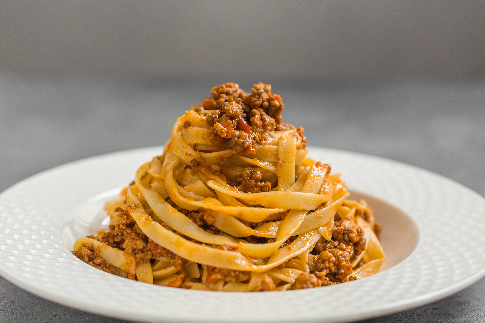

Spaghetti Bolognese Recipe

Ingredients:
- 1 pound (450g) ground beef
- 1/2 pound (225g) ground pork (or all beef)
- 1 onion, finely chopped
- 2 carrots, finely chopped
- 2 celery stalks, finely chopped
- 3 cloves garlic, minced
- 1 cup(420ml) red wine
- 2 cans(14 oz each) crushed tomatoes
- 2 tablespoon tomato paste
- 1 cup(240 ml) chicken stock
- 1 teaspoon dried oregano
- 1 teaspoon dried basil
- 1/2 teaspoon dried thyme
- Salt and pepper to taste
- olive oil for cooking
- 1 pound(450g) spaghetti
- Grated Parmesan cheese for serving
- Fresh parsley, chopped, for garnish
Steps:
-
Prepare Vegetables:
- Heat olive oil in a large pot over medium heat.
-
Add chopped onions, carrots, and celery. Cook until
softened, about 5-7 minutes.
-
Add minced garlic and cook for an additional minute.
-
Cook the Meat:
-
Add ground pork to the pot. Break up the meat with with
a spoon and cook until browned.
-
Deglaze with Wine
-
Pour in the red wine, scraping the bottom of the bottom
of the pot to release any flavorful bits.
-
Add Tomatoes and Paste
- Stir in the crushed tomatoes and tomato paste.
-
Season and simmer
-
Add oregano, basil, thyme, salt, and pepper. Pour in the
broth.
-
Bring the mixture to a simmer, then reduce the heat to
low. Cover and let it simmer for at least 1-2 hours,
stirring occasionally. The longer it simmers, the ticher
the flavors will be.
-
Cook Spaghetti
-
Cook the spaghetti according to package instructions.
Drain.
-
Serve
- Spoon the Bolognesesauce over the cooked spaghetti.
-
Garnish with grated Parmesan cheese and fresh parsley.
Enjoy your homemade Spaghetti Bolognese! Adjust the seasonings
according to your taste preferences.